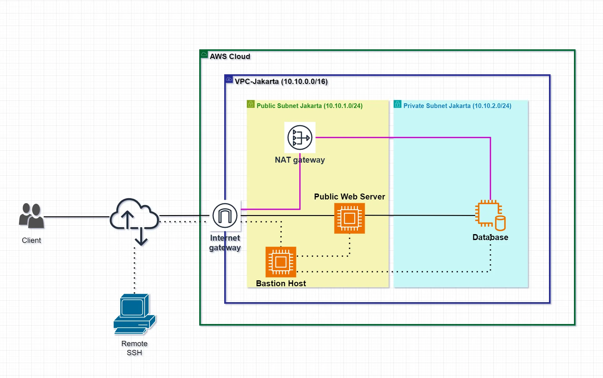

Apa Itu VPC
Amazon Virtual Private Cloud (VPC) adalah layanan cloud yang disediakan oleh Amazon Web Services (AWS) untuk membuat dan mengelola jaringan virtual di lingkungan cloud AWS. Dengan Amazon VPC, Anda dapat mengisolasi sumber daya komputasi secara logis, seperti mesin virtual (Amazon EC2), dan layanan lainnya didalam jaringan virtual yang terisolasi sepenuhnya dari internet atau jaringan publik. Jaringan virtual yang dibuat sangat mirip dengan jaringan tradisional yang Anda operasikan di data center on-premises, dengan manfaatnya yaitu menggunakan infrastruktur AWS yang dapat di skalakan.

Diagram diatas menunjukan contoh VPC. VPC memiliki satu subnet disetiap Availibility Zone di Region dengan EC instance disetiap subnet, dan Internet Gateway untuk memungkinkan komunikasi antara sumber daya di VPC dengan Internet.
Toppologi
Create VPC
Pilih : VPC Only
Name tag : VPC-Jakarta
IPv4 CIDR : 10.10.0.0/16
Create Subnet
#Public Subnet#
VPC ID : VPC-Jakarta
Subnet name : pub-subnet-jakarta
Availibility Zone : us-east-1a
IPv4 CIDR : 10.10.1.0/24
#Private Subnet#
VPC ID : VPC-Jakarta
Subnet name : priv-subnet-jakarta
Availibility Zone : us-east-1a
IPv4 CIDR : 10.10.2.0/24
Edit Public Subnet
Enable auto-assign public IPv4 address : yes
Enable resource name DNS A record on launch : yes
Create Internet Gateway
Name tag : IGW-VPC-Jakarta Attach to VPC-Jakarta
Create NAT Gateway
Name : NGW-VPC-Jakarta Subnet : pub-subnet-jakarta Connectivity type : Public Klik "Allocate Elastic IP"
Create Routes Table
#Public Routes Table# Name : pub-route-jakarta VPC : VPC-Jakarta #Private Routes Table# Name : priv-route-jakarta VPC : VPC-Jakarta
Edit Routes Table
#Public Routes Table# 10.10.0.0/16 : Local 0.0.0.0/0 : Internet Gateway #Private Routes Table# 10.10.0.0/16 : Local 0.0.0.0/0 : NAT Gateway ##Edit Subnet Associations## #Public# Explicit subnet associations : pub-subnet-jakarta #Private# Explicit subnet associations : priv-subnet-jakarta
Create Security Group
Name : SG-BastionHost
VPC : VPC-Jakarta
Inbound Rules :
- SSH | Any Where (IPv4)
Outbound Rules :
- All Trafic | Any Where (IPv4)
Name : SG-WebServer
VPC : VPC-Jakarta
Inbound Rules :
- SSH | Custom : SG-BastionHost
- HTTP | Any Where (IPv4)
- HTTPS | Any Where (IPv4)
Outbound Rules :
- All Trafic | Any Where (IPv4)
Name : SG-DBServer
VPC : VPC-Jakarta
Inbound Rules :
- SSH | Custom : SG-BastionHost
- MySQL/Aurora | Custom : SG-WebServer
Outbound Rules :
- All Trafic | Any Where (IPv4)
Create EC2
#Bastion Host# Name : Bastion Host OS : Ubuntu 22.04 Instance type : t2.micro Key pair : vockey (.pem) Network Setting : klik Edit VPC = VPC-Jakarta Subnet = pub-subnet-jakarta Auto-assign public IP : enable Security Group : SG-BastionHost Storage / EBS : 8GB #WebServer# Name & Tag : WebServer OS : Debian 12 Instance type : t2.micro Key pair : vockey (.pem) Network Setting : klik Edit VPC = VPC-Jakarta Subnet = pub-subnet-jakarta Auto-assign public IP : enable Security Group : SG-WebServer Storage / EBS : 10GB #Database# Name & Tag : DBInstance OS : Debian 12 Instance type : t2.micro Key pair : vockey (.pem) Network Setting : klik Edit VPC = VPC-Jakarta Subnet = priv-subnet-jakarta Auto-assign public IP : disable Security Group : SG-DBServer Storage / EBS : 10GB
=== IP Address ===
| Instance | IP Public | IP Private |
| Bastion Host | 3.82.107.26 | 10.10.1.198 |
| Web Server | 52.91.87.14 | 10.10.1.85 |
| DBInstance | - | 10.10.2.107 |
How to Connect SSH
- Open GitBash
- cd Downloads/
- ssh-agent bash
- ssh-add labsuser.pem
ssh -A -i labsuser username@ip-addr-pub-bastion
ssh -A -i labsuser ubuntu@3.82.107.26
SSH Jump to WebServer/DBInstance
Dari Bastion Host
ssh username@ip-priv-ec2 ssh admin@10.10.1.85 ssh admin@10.10.2.107